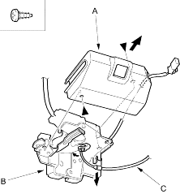
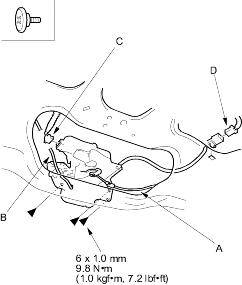

- If necessary, remove the screw, then remove the protector cover (A) from the latch (B) and disconnect the tailgate opener cable (C) from the latch.
| Fastener Locations |
 : Screw, 2 : Screw, 2 |

- Install the latch in the reverse order of removal and note these items:
- Make sure each connector is plugged in properly, and the cable is connected properly.
- Make sure the tailgate opens properly and locks securely.
- Remove the tailgate lower trim panel (see page 20-209).
- Disconnect the tailgate opener cable (A), cylinder rod (B), tailgate actuator connector (C) and tailgate latch switch connector (D) and detach the tailgate latch switch connector from the tailgate.
Fastener Locations : Bolt, 3

- Remove the bolts, then pull the tailgate latch (E) out, then remove it.
- Install the latch in the reverse order of removal and note these items:
- Make sure each connector is plugged in properly and the rod and cable are connected properly.
- Make sure the tailgate opens properly and locks securely.